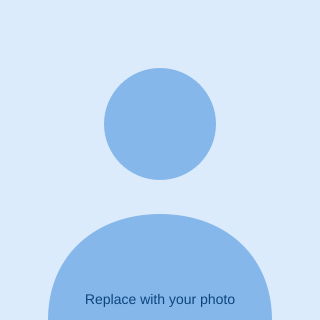

Infrastructure as Code
Problem. Manual Azure provisioning drifted across three environments.
Approach. Terraform modules and PowerShell, run from Azure DevOps pipelines with version-controlled templates.
70% less manual configuration time
Toronto, Canada · open to permanent roles
Cloud and platform engineer
I build secure, repeatable infrastructure on Azure and AWS. Fifteen years in software, five-plus on Azure, now working on Kubernetes and AI platforms.

Click a role to see what I did. The line colour shows the era: .NET, Azure, AWS and AI.
Problem, approach, result.
Problem. Manual Azure provisioning drifted across three environments.
Approach. Terraform modules and PowerShell, run from Azure DevOps pipelines with version-controlled templates.
70% less manual configuration time
Problem. Workloads needed protection while staying connected to on-premises systems.
Approach. VNets, NSGs, Azure Firewall, VPN gateways, load balancers and Application Gateways.
Secure, reliable hybrid connectivity
Problem. Manual scaling of cloud-native apps was slow and fragile.
Approach. Docker, AKS and Helm with resource limits, autoscaling, RBAC and automated builds.
99.9% uptime and faster scaling
Problem. Issues were found late, which meant avoidable downtime.
Approach. Azure Monitor, Application Insights and Log Analytics with dashboards and automated alerts.
Faster troubleshooting, less downtime
Azure, AWS
Terraform, ARM templates, Bicep
Azure DevOps, GitHub Actions, Jenkins
Docker, Kubernetes (AKS, EKS), Helm
C#, Python, PowerShell, Bash
SQL Server
Each badge links to its public verification page.
I'm looking for a permanent cloud or platform engineering role.